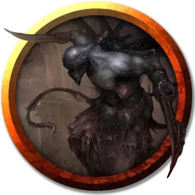

Безжалостный рубака
Relentless Slasher
Среднее Исчадие

Класс Доспеха 15 (природный доспех)
Хиты 84 (13к8 + 26)
Скорость 40 футов
| мод | спас | ||
|---|---|---|---|
| СИЛ | 12 | +1 | +4 |
| ЛОВ | 18 | +4 | +7 |
| ТЕЛ | 14 | +2 | +5 |
| мод | спас | ||
|---|---|---|---|
| ИНТ | 14 | +2 | +2 |
| МДР | 15 | +2 | +5 |
| ХАР | 16 | +3 | +3 |
Навыки Атлетика +7, Восприятие +5, Выживание +5
Иммунитет к состояниям испуг, очарование
Чувства тёмное зрение 120 футов, пассивное Восприятие 15
Опасность 8 (3900 опыта)
Бонус мастерства +3
Особенности
Языки. Понимает все языки, но не может говорить.
Легендарное сопротивление (1/день). Если рубака проваливает спасбросок, он может вместо этого сделать спасбросок успешным.
Скрытое присутствие. Рубака обладает иммунитетом к любому эффекту, который мог бы почувствовать его эмоции или прочитать его мысли, и он не может быть обнаружен умениями, которые чувствуют исчадий.
Действия
Мультиатака. Рубака совершает две атаки «Ножом рубаки».
Нож рубаки. Рукопашная или дальнобойная атака оружием: +7 к попаданию, досягаемость 5 фт. или дистанция 30/60 фт., одна цель. Попадание: 6 (1к4 + 4) рубящего урона и 21 (6к6) урона некротической энергией. Если целью является существо, у него появляется глубокая рана, которая заставляет его получать 7 (2к6) урона некротической энергией в начале каждого своего хода. Каждый раз, когда рубака попадает по цели, раненой этой атакой, урон, получаемый из-за раны, увеличивается на 3 (1к6). Рана затягивается, если цель восстанавливает хиты или если существо действием останавливает кровь, что требует успешной проверки Мудрости Сл 15 (Медицина).
Легендарные действия
Рубака может совершить 3 легендарных действия, выбирая из представленных ниже вариантов. За один раз можно использовать только одно легендарное действие, и только в конце хода другого существа. Рубака восстанавливает использованные легендарные действия в начале своего хода.
Полосование. Рукопашная или дальнобойная атака оружием: +7 к попаданию, досягаемость 5 фт. или дистанция 30/60 фт., одна цель. Попадание: 7 (1к6 + 4) рубящего урона.
Удар с исчезновением (стоит 3 действия). Рубака совершает одну атаку «Ножом рубаки». После того, как атака попадет или промахнется, рубака может телепортироваться на расстояние до 30 футов в свободное пространство, которое он может видеть.
Описание
Безжалостный рубака совершает свои кровавые деяния в тишине, а затем исчезает в тени и позоре. Зацикленный на конкретном человеке или типе жертвы, он преследует свою цель с целеустремленной одержимостью.
См. дополнительно статью: "Бестиарий: Безжалостные Убийцы"